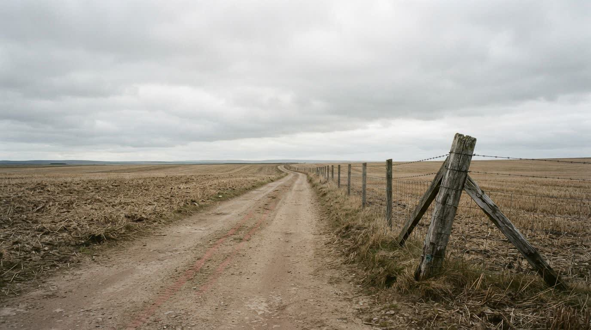

Recuperação judicial não é o único caminho. A análise vem antes da escolha.
Quando a dívida fica maior que a safra, existe mais de uma porta — e a errada custa anos. Avaliamos dívida, garantias e capacidade de pagamento antes de dizer qual delas é a sua.
Atendimento em Jataí, Rio Verde e região. Sigilo em todo atendimento.
Antes de pedir
Recuperação judicial é uma das saídas. Quase nunca é a primeira.
É um processo longo, público e caro, que trava crédito e expõe a operação. Existe para quem precisa dele — e para quem não precisa, existem caminhos mais rápidos e menos traumáticos.
Repactuação direta
Negociação com cada credor, fora do Judiciário, quando o passivo é concentrado e o caixa fecha.
Alongamento
Prorrogação prevista em regras próprias do crédito rural, quando o caso se enquadra.
Reestruturação com gestão
Reorganização do passivo casada com o corte da sangria de caixa que criou o passivo.
Recuperação judicial
Quando o passivo é grande, pulverizado e há execução em curso — e a atividade ainda é viável.
Regras de 2026
O que o Provimento 216/2026 do CNJ passou a exigir.
O CNJ padronizou o que antes cada comarca decidia do seu jeito. Na prática, o produtor que não tem a papelada organizada perde o pedido — não por mérito, por documento.
- Comprovação de exercício da atividade rural por, no mínimo, dois anos
- Livro Caixa Digital do Produtor Rural
- Declaração de Imposto de Renda
- Separação clara entre dívida da atividade rural e dívida pessoal
- Plano construído com número real de produção, custo e capacidade de pagamento
O STJ, no Tema 1.145, firmou que o produtor rural pessoa física pode pedir recuperação judicial desde que comprove mais de dois anos de atividade, bastando o registro na Junta Comercial no momento do pedido.
Plano especial: até R$ 4,8 milhões
O produtor rural pode apresentar plano especial de recuperação judicial quando o valor da causa não excede R$ 4.800.000,00, conforme os artigos 70-A e seguintes da Lei 11.101/2005.
E só entra no processo a dívida ligada diretamente à atividade rural e devidamente registrada — o que muda bastante a conta de quem misturou pessoa física e jurídica ao longo dos anos.
Como o escritório trabalha
A análise de viabilidade vem antes da petição.
-
Diagnóstico do passivo
Toda a dívida por credor, garantia e vencimento, separando o que é da atividade rural do que é pessoal. É esse recorte que decide o que pode entrar no processo.
-
Viabilidade da atividade
Produtividade e custo por hectare contra a capacidade real de pagamento. Se a atividade não se sustenta depois do processo, recuperação judicial só adia o desfecho.
-
Escolha do caminho
Com o número na mesa, a decisão entre negociar, alongar, reestruturar ou pedir recuperação judicial deixa de ser aposta. E o plano nasce com lastro.

Quem cuida do seu caso
Lucas Cabral, advogado de Direito do Agronegócio.
O escritório acompanha Plano Safra, Banco Central, Conab, CNJ e as decisões do STJ sobre crédito rural — e é dessa leitura que sai a análise do seu caso, não de modelo de petição.
Base em Jataí, GO, com atendimento em Serranópolis, Ponte de Pedra, Mineiros, Rio Verde, Montividiu, Chapadão do Céu e região. Quando o caso pede, a conversa é na fazenda.
- Segurança
- Calma
- Racionalidade
- Estratégia
- Presença
- Respeito
Perguntas frequentes
O que se pergunta antes de decidir
Produtor pessoa física pode pedir recuperação judicial?
Pode. O STJ consolidou no Tema 1.145 que o produtor rural pessoa física tem legitimidade, desde que comprove o exercício da atividade agrícola por mais de dois anos, bastando o registro na Junta Comercial no momento do pedido.
Nunca mantive escrituração organizada. Isso me impede?
Dificulta, e é o ponto em que mais pedidos tropeçam — o Provimento 216/2026 pede Livro Caixa Digital do Produtor Rural e declaração de Imposto de Renda. Parte disso é reconstituível, parte não. É exatamente o que a análise de viabilidade responde antes de qualquer petição.
Todas as minhas dívidas entram no processo?
Não. Só a dívida ligada diretamente à atividade rural e devidamente registrada. Dívida pessoal fica de fora, o que muda a conta de quem misturou pessoa física e jurídica ao longo dos anos.
Entrar em recuperação judicial fecha meu crédito?
É um processo público e ele pesa na relação com credores e fornecedores. Esse custo entra na balança antes da decisão — e é uma das razões pelas quais nem todo caso deve virar recuperação judicial.
Quanto tempo leva a análise?
A análise de viabilidade depende do tamanho do passivo e do estado da documentação. O prazo é combinado na primeira conversa, junto com o que precisa ser reunido.
Primeiro passo
Conte o tamanho do problema.
Preencha abaixo. O escritório entra em contato para entender a situação e dizer, com honestidade, se recuperação judicial é o caminho do seu caso ou se existe porta melhor.